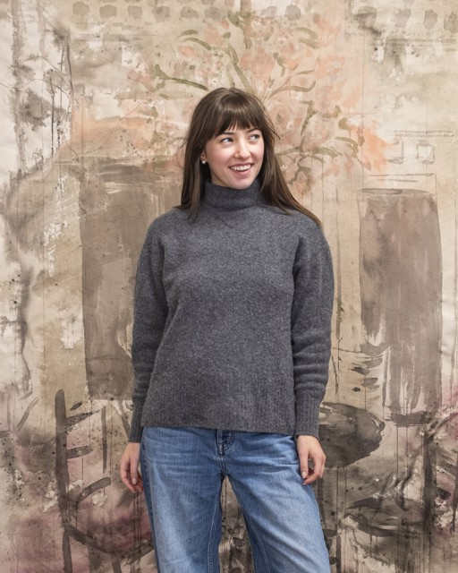

Ava Peterson Artist Talk
Ava L. Peterson (B. 2002, Columbus, OH) is an interdisciplinary artist based in Chicago, IL, who investigates the consequences of opulence and excess. Through the lens of painting, Peterson re-examines imagery sourced from contemporary interior design magazines and historic upper-class interiors, allowing these idealized tableaux to stain, bleed, and drift apart until ornament deteriorates into abstraction.
Peterson received a BFA in Studio Art from Denison University (‘24) and is an MFA candidate in Painting & Drawing at the School of the Art Institute of Chicago (‘26). Notable exhibitions include solo shows, “House & Garden” (Incubator Gallery, IL) and “Clear the Kitchen Table” (Bryant Arts Center, OH). Recent group shows include “Housewarming” (Elise Seigenthaler Gallery, IL) and “In a Child’s Place” (Purple Window Gallery, IL). Peterson has also received the Nan Nowik Memorial Award for Outstanding Artistic Expression (’24) and was a Luminarts Visual Arts Fellowship Finalist (’25).
About the exhibition
GRAND OPENING
“Housewarming” marks the inaugural exhibition at Elise Seigenthaler Gallery
Opening January 9, 2026, with works by
Amira Diaw, Rebekka Federle, Ava Peterson, and Olivia Porter